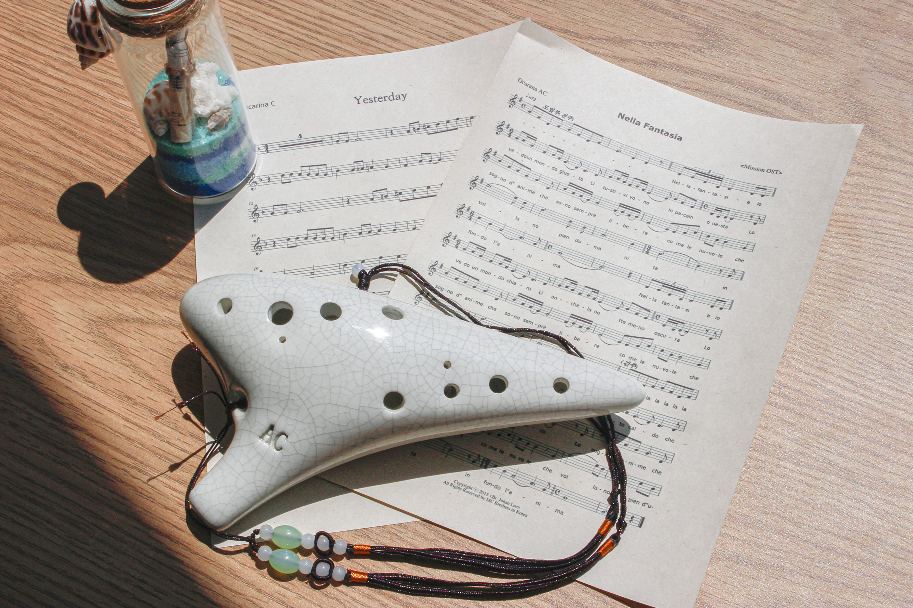

세상의 얘기로 정해질 거라면
나는 아이가 되어
바다로 갈거야
바다아이-윤하
일상에 지쳐 바다로 떠나고 싶은 당신을 위해
바다의 소리를 닮은 오카리나를 배워보는 건 어떨까요?
오카리나는 흙을 빚어 가마에서 구워낸 도자기형 취주악기로 아주 오래전부터 전해져 내려오는 토기 형태의 악기 입니다.
오카리나는 초보자들도 쉽게 소리를 낼수 있으며, 어릴때 한번쯤 배워보는 리코더와 운지법이 비슷해 연주에 쉽게 익숙해 질 수 있습니다.

나를 바다라 불러 주는 너
그 속에 언제 파도가 일어날진 알 수 없고
나도 모르게 니가 바람이 될 수도 있어
넌 그냥 있는 그대로 날 바라보면 돼
그의 바다-백예린
바다의 머금은 모래와 노래를 유리병에 담아 전해드립니다.
바다, 소리, 오카리나는 바다를 담은 모래와 유리병, 조개껍질을 이용해 악보를 전달해 드립니다.
유리병의 악보는
바다가 떠오르는 노래들로 구성했으며
초보자들도 쉽게 따라서
연주할 수 있는 난이도 입니다.
천연염색한 색모래와 자연 그대로의 조개 껍질을 이용해 하나하나 정성들여 제작합니다.
한명의 제작자가 하나의 모래병을 책임지며 제작의 모든 과정을 관리하고 각각의 모래병은 고유의 디자인을 가집니다.
아름다워서 움직이질 못하겠네
반짝이는 물결
아 일단 바다에 누워 봐요
우리 딱 하루만 더 있다 가요
바다가 되고 싶어요-백예린
이제 오카리나를 연주해볼 시간입니다.
연주 영상
언제나 몇번이라도
(센과 치히로의 행방불명ost)
I'm in the ocean of light
내 꿈이 숨을 쉰다
눈부신 빛의 파도 속에서
새롭게 태어나고 있어
ocean of light - 넬